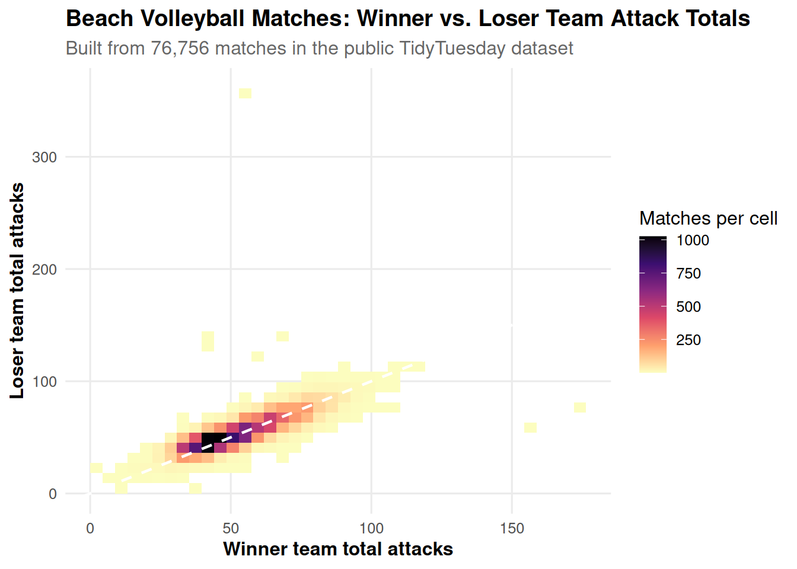

NCAA Volleyball Comeback Rates After Losing Set 1
Overview
This website uses the same dataset from Milestone 3 to explore how often a volleyball team comes back and wins a match after losing the first set. I also downloaded a larger public volleyball dataset so the homepage includes one graphic built from thousands of observations.
The data show that teams that lose the first set still win the match in about 21.2% of NCAA Division I matches overall, and that comeback chances rise dramatically as matches extend to four or five sets. The added public dataset below includes 76,756 volleyball matches, so the homepage now features a larger-scale graphic as well.
Key findings
<strong>21.2%</strong>
Overall comeback rate after losing set 1<strong>0%</strong>
3-set matches<strong>33.2%</strong>
4-set matches<strong>51.5%</strong>
5-set matchesAdditional public-data graphic
This plot uses the downloaded TidyTuesday beach volleyball dataset and is built from 76,756 matches, giving a smooth view of how team attack totals compare between winning and losing sides.
Match length and comeback rates
| Match length | Total matches | Comebacks | Comeback rate (%) |
|---|---|---|---|
| 3-set matches | 2301 | 0 | 0.0 |
| 4-set matches | 1522 | 505 | 33.2 |
| 5-set matches | 1009 | 520 | 51.5 |
Conference comparison
Hover over any conference to see the comeback win rate and the number of 4-set vs. 5-set comebacks.
Takeaway
The data show a clear pattern: when a team falls behind after the first set, its chance of winning the match depends strongly on how long the match lasts. Longer matches give the trailing team more time to recover, which is why 4-set and especially 5-set matches have much higher comeback rates than short sweeps.